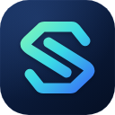
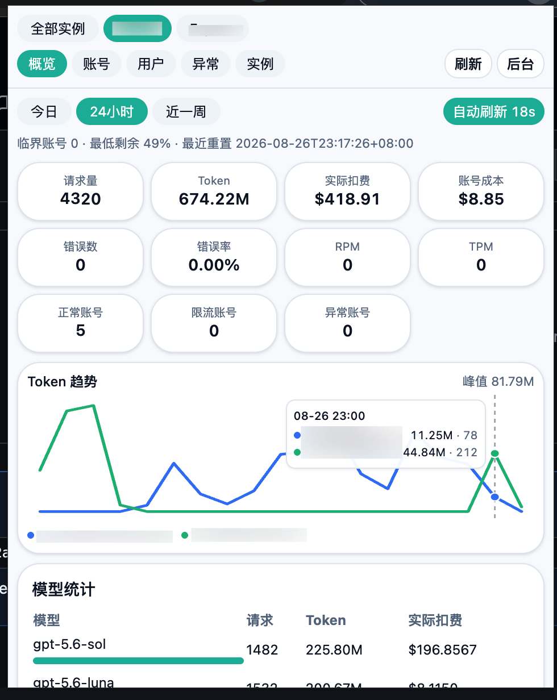
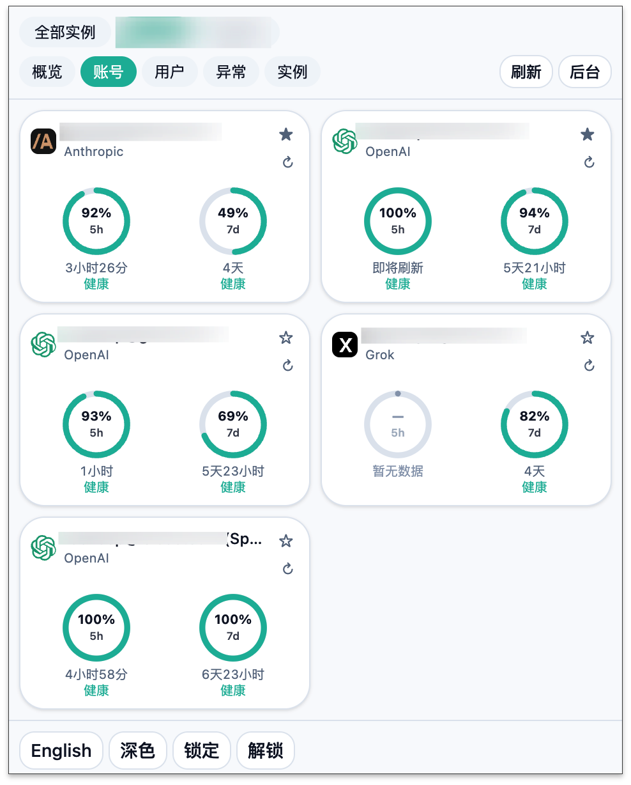

Chrome / Edge 上的 Sub2API 多实例控制台
A multi-instance Sub2API console for Chrome / Edge
点一下工具栏图标，就能看额度、用量、用户和异常，而不用打开后台网页。480×600 弹窗，不注入页面。
Click the toolbar icon to see quota, usage, users, and errors — without opening the admin site. 480×600 popup, no content scripts.


能做什么
What it does
- 添加任意数量 Sub2API 站点，在「全部实例」和某一台之间切换
- 概览把请求量、Token、费用、错误加总；配额剩余不会被平均掉
- 账号卡片显示平台 Logo 和 5h / 7d 剩余；数据过期时圆环变灰仍保留进度
- 用户按今日消费排序，可调整余额或重置平台窗口（需允许写入）
- 凭证默认记住且不锁密钥；也可为单个实例配置密码锁定
- Add any number of Sub2API sites; switch All instances vs a single site
- Overview sums requests, tokens, cost, and errors — remaining quota is never averaged
- Account cards show platform logos and 5h / 7d remaining; stale rings stay gray with last progress
- Users ranked by today’s spend; optional balance / quota writes with a reason
- Secrets are remembered without a password by default; optional per-instance lock
安装
Install
需要 Node.js 20+ 和 pnpm。克隆仓库后：
Node.js 20+ and pnpm. After cloning:
pnpm install pnpm build
- 打开 chrome://extensions 或 edge://extensions
- 打开开发者模式，加载已解压的扩展，选中
.output/chrome-mv3 - 把图标钉到工具栏后点击即可
- Open chrome://extensions or edge://extensions
- Enable Developer mode, Load unpacked, select
.output/chrome-mv3 - Pin the icon and click it